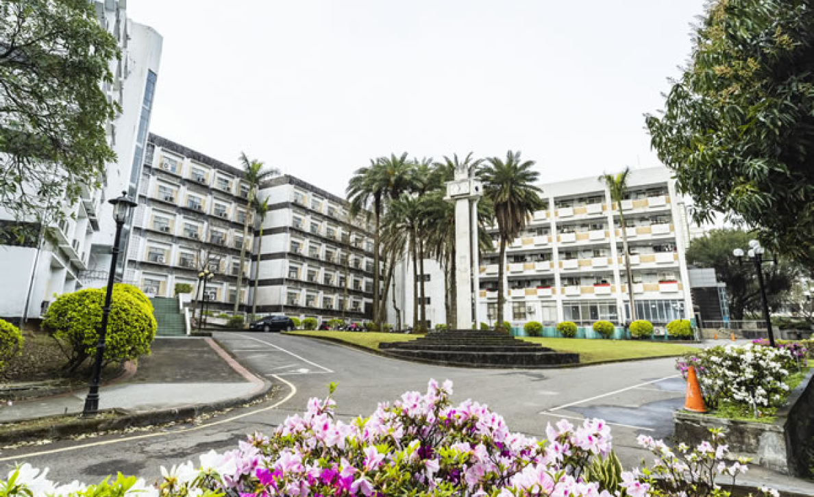

Sung-Tao Hall 1, 2, and 3 are on-campus dormitories for female students only...
- Entrance control: 24 hour card system (student ID) for entrance; entering and leaving the dorm at night will have records that are periodically updated on the Student Housing Guidance Section website for students and parents to keep track of. There are also cameras near entrance and security guards to keep students safe.
- Hardware supplied: Each room can house two or four students. Each room contains beds (no mattress included), desks, chairs, desk lights, closets, and window shades for students to use. To increase living standards, each room's air conditioner uses top-up air conditioning cards. The public area includes lounges, study rooms, washing areas (includes washing machines, dryers, and dehydrators, activated by coins), and also provides fridges, microwaves, ovens, hot plates, rice cookers, drinking fountains, and mailboxes to fulfill student’s everyday needs.
- Leisure activities: Establish a dormitory student council made up of passionate students to hold special events such as an “All Pass” event, Christmas parties, and other activities.
- Guidance and Counseling section: Three counselors are assigned to assist students with daily needs and other administrative tasks. Counselors are available at night and on weekends to help with sudden accidents so that family members don't have to worry about students' safety.
- Life functions: Sung-Tao Hall 2 has smart vending machines, with a cafeteria downstairs. There are also a bookstore and post office on campus, along with bus stops that reach the Tamsui MRT and Danhai LRT stations.